OpenCV 基础教程
xxxxxxxxxximport cv2import numpy as npimport matplotlib.pyplot as plt%matplotlib inline%config InlineBackend.figure_format = 'retina'xxxxxxxxxx# 用于退出 opencv 的图片展示窗口def exit_window(k): if k==27: cv2.destroyAllWindows() #wait for ESC key to exitxxxxxxxxxx# 展示图片def show_img(imgs,rows,cols,titles=None,figsize=(16,8),axis = "off"): plt.figure(figsize=figsize) for i in range(rows*cols): if i < len(imgs): plt.subplot(rows, cols, i + 1) if titles != None: plt.title(titles[i]) if len(imgs[i].shape) < 3: # 显示灰度图像 plt.imshow(imgs[i],cmap = "gray") else: # 显示正常图像 plt.imshow(imgs[i][:,:,::-1]) plt.axis(axis) plt.show()OpenCV 图片基本操作
读取图像
使用：'cv2.imread(文件名, 标记)' 可选的标记如下:
cv2.IMREAD_COLOR总是读取到三通道数组中、cv2.IMREAD_GRAYSCALE读取到单通道数组中，灰度模式、cv2.IMREAD_ANYCOLOR读取的通道由具体的文件决定，最高3通道、cv2.IMREAD_ANYDEPTH允许读取超过深度超过8位的图像、cv2.IMREAD_UNCHANGED完全按照文件的原有形式进行读取、
默认情况下是 3 通道颜色模式，OpenCV 的颜色通道排列方式为 BGR，而传统的排列方式为 RGB，如下图 BGR 方式排列：
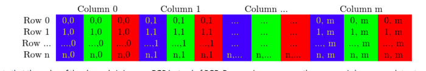
xxxxxxxxxx# 一般图像读取方式img = cv2.imread("./images/12.jpg")# 以灰度方式读取图像img_grey = cv2.imread("./images/12.jpg", cv2.IMREAD_GRAYSCALE)xxxxxxxxxxcv2.imwrite("12-grey.jpg",img_grey)xxxxxxxxxxTrue
xxxxxxxxxx# 采用灰度模式显示plt.imshow(img_grey,cmap="gray",interpolation = 'bicubic')plt.show()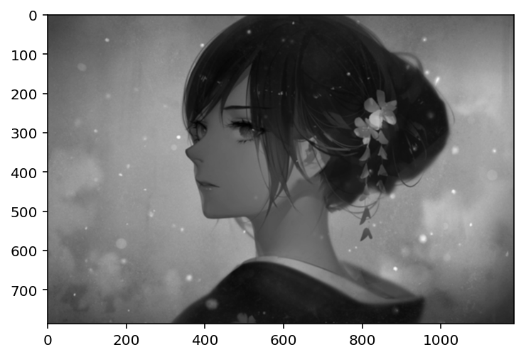
显示图片
使用 cv2.imshow() 显示图像，
cv2.waitKey()等待键盘输入，为毫秒级cv2.destroyAllWindows()可以轻易删除任何我们建立的窗口，括号内输入想删除的窗口名
cv2.namedWindow('image',cv2.WINDOW_NORMAL) 可以在展示图片前先常见一个窗口，并对窗口设置参数
xxxxxxxxxxcv2.imshow("图片",img)k = cv2.waitKey(0)exit_window(k)xxxxxxxxxx27 27
保存图片
使用 cv2.imwrite(文件名, 文件数据, flags) 保存成功返回 true, 可选的 flag 值与读取图片类似，有 ：IMWRITE_JPEG_CHROMA_QUALITY 等。
xxxxxxxxxxcv2.imwrite("12-copy.png",img)xxxxxxxxxxTrue
xxxxxxxxxxplt.imshow(img[:,:,::-1])plt.show()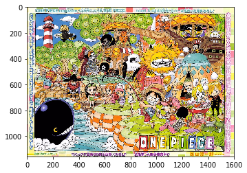
OpenCV 视频操作
读取视频
对视频的捕获可以使用 videoCapture() ，传入 0 表示使用计算机内置的摄像头，传入文件名则读取视频。
isOpened()用于判断摄像头或者视频已经打开, 若是没有打开就需要使用cap.open()来打开get(属性 ID)获取视频的相关信息，可算的参数值为 0 - 18，也可以使用具体的属性名称，在3.0中需要把 CV_ 去掉：- CAP_PROP_POS_MSEC
- CAP_PROP_POS_FRAMES
- CAP_PROP_POS_AVI_RATIO
- CAP_PROP_FRAME_WIDTH
- CAP_PROP_FRAME_HEIGHT
- CAP_PROP_FPS
- CAP_PROP_FOURCC
- CAP_PROP_FRAME_COUNT
- CAP_PROP_FORMAT
- CAP_PROP_MODE
- CAP_PROP_BRIGHTNESS
- CAP_PROP_CONTRAST
- CAP_PROP_SATURATION
- CAP_PROP_HUE
- CAP_PROP_GAIN
- CAP_PROP_EXPOSURE
- CAP_PROP_CONVERT_RGB
- CAP_PROP_WHITE_BALANCE
- CAP_PROP_RECTIFICATION
set(属性 ID, value)重新设置属性的值
xxxxxxxxxxdef read_video(src): cap = cv2.VideoCapture(src) # 通过属性名称获取视频的属性 print(cap.get(cv2.CAP_PROP_FPS)) # 获取相关属性信息# for i in range(19):# print(cap.get(i)) while cap.isOpened(): # 捕获视频帧 ret, frame = cap.read() # 对每一帧进行操作 gray = cv2.cvtColor(frame,cv2.COLOR_BGR2GRAY) # 显示帧 cv2.imshow("视频", gray) # 当有按键，或者视频播放完成时推出 k = cv2.waitKey(1) if k & 0xFF == ord("q"): break # 操作完成，释放资源 cap.release() cv2.destroyAllWindows()# 从设备中读取帧# read_video(0)# 从文件中读取read_video("/Users/weduoo/Desktop/stream/sample.rmvb")xxxxxxxxxx25.0
保存视频
保存视频使用 VideoWriter() 其含有一下几个参数：
filename– 输出文件的文字.fourcc– 压缩帧使用的四字编码，如 VideoWriter::fourcc('P','I','M','1') 是 MPEG-1 编码, VideoWriter::fourcc('M','J','P','G') 是 motion-jpeg 编码等.完整编码列表再此页面 Video Codecs by FOURCC, 常用的有 Fedora : DIVX , XVID , MJPG , X264 , WMV1 , WMV2 ; XVID是最好的，MJPG是高尺寸视频，X264得到小尺寸视频. Windows : DIVX. Mac: MP4V.fps– 视频的帧率frameSize– 帧的大小.isColor– If it is not zero, the encoder will expect and encode color frames, otherwise it will work with grayscale frames (the flag is currently supported on Windows only).
The constructors/functions initialize video writers. On Linux FFMPEG is used to write videos; on Windows FFMPEG or VFW is used; on MacOSX QTKit is used.
需要注意的是，设置的保存尺寸一定要和原始帧的大小一致，否则无法保存成视频。
【参考】
- 翻转示例：opencv: cv2.flip 图像翻转 进行 数据增强
- 编码示例：OpenCV Video Writer on Mac OS X
- 保存视频示例：Record video with Python 3 + OpenCV 3 on OSX
xxxxxxxxxxdef save_video(src): # 读取流 cap = cv2.VideoCapture(src) # 设置尺寸与帧率 width = int(cap.get(cv2.CAP_PROP_FRAME_WIDTH) + 0.5) height = int(cap.get(cv2.CAP_PROP_FRAME_HEIGHT) + 0.5) fps = cap.get(cv2.CAP_PROP_FPS) # 设定编码器及其其他参数 fourcc = cv2.VideoWriter_fourcc(*'mp4v') out = cv2.VideoWriter("my.mp4",fourcc,fps,(width,height)) while cap.isOpened(): ret,frame = cap.read() if ret and (src == 0): # 对帧进行翻转，因为摄像头拍摄的是翻过来的图片 # 1 水平翻转，0 垂直翻转，-1 水平垂直翻转 frame = cv2.flip(frame,1) # 保存帧 out.write(frame) # 显示帧 cv2.imshow("frame",frame) # waitKey 选择 0 的话无法读取图像 if cv2.waitKey(1) & 0xFF == ord("q"): break # 释放资源 cap.release() out.release() cv2.destroyAllWindows() save_video(0)OpenCV 中的绘图函数
OpenCV 中有以下几种绘图函数：
cv2.line()绘制线cv2.cicle()绘制原型cv2.rectangle()绘制矩形cv2.ellipse()绘制椭圆cv2.putText()添加文字
以上函数共有的参数如下：
img你想要绘制的图形的那副图像plt1、plt2起止点（元组）color形状的颜色，以RGB为例，需要传入的元组，例（255,0,0）代表蓝色，对于灰度图只需传入灰度值thickness线条的粗细，如果给一个闭合图形设置为-1，那么这个图形就会被填充，默认值为1linetype线条的类型，8连接，抗锯齿等。默认是8连接。cv2.LINE_AA为抗锯齿
画线
xxxxxxxxxx# 创建一个黑色图片line = np.zeros((256,256,3),np.uint8)cv2.line(line, (0,0), (256,256),(255,255,0),2,cv2.LINE_AA)plt.imshow(line)plt.show()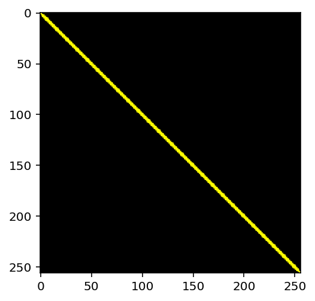
画矩形
需要告诉函数左上角顶点和右下角顶点的坐标
xxxxxxxxxxrectangle = np.zeros((256,256,3),np.uint8)cv2.rectangle(rectangle, (44,44), (150,150),(255,0,0),2,cv2.LINE_AA)plt.imshow(rectangle)plt.show()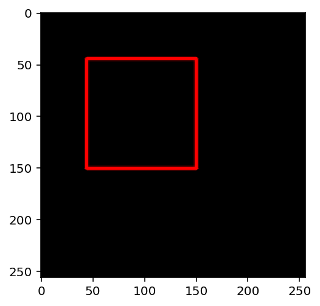
画圆形
需要指定圆心坐标和半径大小，可以在上面矩形中画个圆
xxxxxxxxxxcv2.circle(rectangle, (97,97), 53, (255,0,255),2,cv2.LINE_AA)plt.imshow(rectangle)plt.show()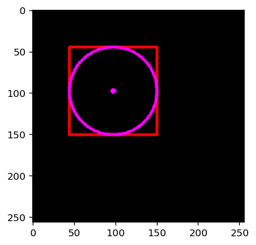
画椭圆
参数为：
img用于作画的图片,center椭圆中心点的位置,axes椭圆轴的长度，分为横轴与纵轴，用一个元组表示,angle以度为单位的旋转角度，以原点为中心顺时针旋转此角度,startAngle开始角度，以横轴右向为起点做顺时针旋转,endAngle结束角度,- color[, thickness[, lineType[, shift]]]
xxxxxxxxxxellipse = np.zeros((256,256,3),np.uint8)cv2.ellipse(ellipse, (128,128), (100,50), 0,30,135,(255,120,255),-1)plt.imshow(ellipse)plt.show()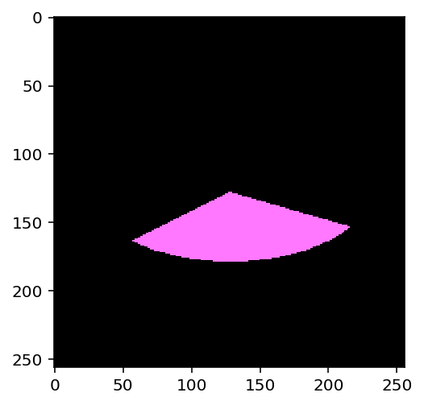
绘制多边形
需要指定每个顶点的坐标，构建一个大小相等于行数 × 1 × 2 的数组，行数就是点的数目，这个数组必须为int32。
cv2.polylines() 可以用来画很多条线。只把想画的线放在一 个列中将个列传给函数就可以了。每条线会独立绘制。会比用 cv2.line() 一条一条的绘制快一些。
xxxxxxxxxxpolyline = np.zeros((256,256,3),np.uint8)pts=np.array([[100,5],[200,30],[70,200],[50,10]],np.int32)# 这里reshape的第一个参数为-1，表明这一维度的长度是根据后面的维度计算出来的# print(pts)pts = pts.reshape((-1,1,2))# print(pts)#注意第三个参数若是False，我们得到的是不闭合的线cv2.polylines(polyline,[pts],True,(0,255,255))plt.imshow(polyline)plt.show()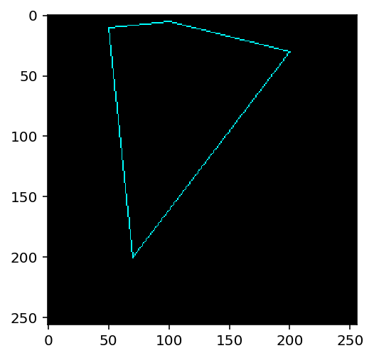
添加文字
需要设置，文字内容，绘制的位置，字体类型、大小、颜色、粗细、类型等，这里推荐linetype=cv2.LINE_AA。
目前 OpenCV 不支持添加中文，想要添加中文可以将图片转成 PIL 格式，在 PIL 格式上添加文字之后在转成 OpenCV 格式。
xxxxxxxxxxtext = np.zeros((256,256,3),np.uint8)font = cv2.FONT_HERSHEY_SIMPLEX cv2.putText(text,'OpenCV',(10,100), font, 1,(255,123,255),2,cv2.LINE_AA)plt.imshow(text)plt.show()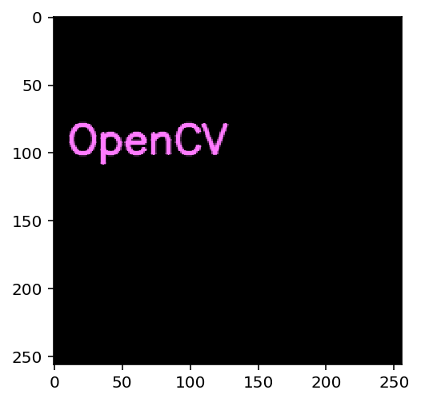
OpenCV 进阶操作
图片进阶操作
获取并修改像素值
读取一副图像，根据像素的 行 和 列 的坐标获取它的像素值，对于RGB图像而言，返回RGB的值，对于灰度图则返回灰度值
xxxxxxxxxx# 安装 RGB 格式读取图片iimg = cv2.imread("./images/12.png")# 即相当于 iimg 含有 786 个 1186 × 3 的二维数组print("shape:",iimg.shape, "length:",len(iimg))# shape 为 (786, 1186), 即取出第二列iimg[:,:,2]xxxxxxxxxxshape: (786, 1186, 3) length: 786array([[ 79, 79, 79, ..., 105, 104, 103],[ 79, 79, 79, ..., 105, 105, 104],[ 80, 80, 79, ..., 105, 106, 105],...,[ 69, 69, 70, ..., 40, 40, 40],[ 69, 69, 69, ..., 39, 40, 40],[ 68, 68, 67, ..., 39, 39, 40]], dtype=uint8)
xxxxxxxxxx# 取出像素并修改px=iimg[100,100]print(px)blue = iimg[100,100,0]print(blue)iimg[101,101]=[255,255,255]print(iimg[101,101])xxxxxxxxxx[ 99 109 107]99[255 255 255]
numpy 是经过优化了的进行快速矩阵运算的包，所以不推荐逐个获取像素值并修改能矩阵运算就不要用循环。例如前5行的后3列，用 numpy 的array.item() 和 array.itemset() 会更好。但是返回是标量，如果想获得所有RGB的值，需要使用 array.item()分割他们。
更好的方法是
xxxxxxxxxxprint(iimg.item(200,200,2))iimg.itemset((200,200,2),100)print(iimg.item(200,200,2))xxxxxxxxxx136100
查看图像的属性
属性的查看可以使用如下的方法：
img.shape: 可以获得图像的形状，返回值是一个包含行数，列数，通道数的元组.如果图像是灰度图，返回值仅有行数和列数，所以通过检查返回值可以判断是灰度图还是彩色图img.size: 可以返回图像的像素数目img.dtype: 返回图像的数据类型，在debug时很重要，因为OpenCV-Python代码中经常出现数据类型的不一致
xxxxxxxxxx# 图片形状print("shape:", iimg.shape)# 像素总数 即 shape 中的三个值相乘print("size:", iimg.size)# 数据类型print("data type :", iimg.dtype)xxxxxxxxxxshape: (786, 1186, 3)size: 2796588data type : uint8
ROI 操作
ROI 即 Region Of Interest，对感兴趣的区域操作。操作的实现都是通过 numpy索引来实现。
【参考】
xxxxxxxxxxplt.imshow(iimg)plt.show()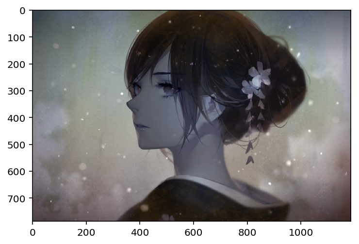
xxxxxxxxxx# 如将眼睛做移动, 先选择高度位置，再选择宽度位置eye = iimg[200:350,450:600]plt.imshow(eye)plt.show()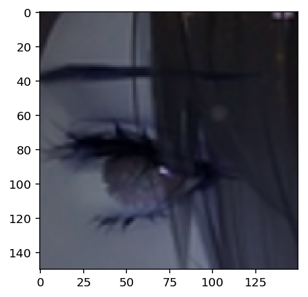
xxxxxxxxxx# 移动位置，此处移动的位置大小要与截取大小相同iimg[500:650,900:1050] = eyeplt.imshow(iimg)plt.show()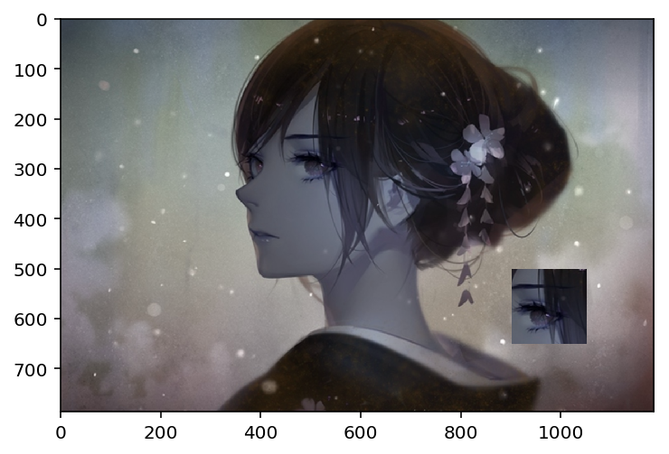
通道拆分
有时需要对RGB三个通道分别操作，这就需要拆分RGB为单个通道。有时需要把独立的通道的图片合成一个RGB。
使用 split 可进行通道拆分， 但 OpenCV 拆出来的通道为 B、G、R。cv2.split() 是比较耗时的操作，能用numpy就尽量使用。假如想使所有红色通道值都为0，不必拆分再赋值，可以使用numpy索引，img[:,:,2]=0 , 这样更快.
使用 merge 可进行通道合并，注意合并的顺序。
【参考】
xxxxxxxxxx# 拆分三通道simg = cv2.imread("./images/rgb.jpg")# 使用 numpy 操作# b = simg[:,:,0]# g = simg[:,:,1]# r = simg[:,:,2]b,g,r = cv2.split(simg)plt.figure(figsize=(16,8))plt.subplot(131)plt.imshow(r,cmap="gray")plt.subplot(132)plt.imshow(g,cmap="gray")plt.subplot(133)plt.imshow(b,cmap="gray")plt.show()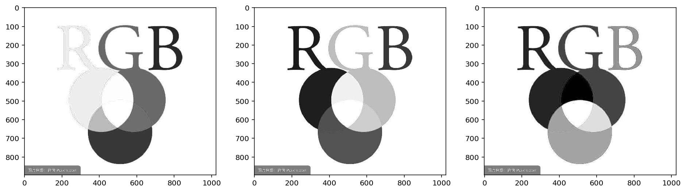
xxxxxxxxxxcv2.imshow("Red", r)cv2.imshow("Green", g)cv2.imshow("Blue", b)cv2.waitKey(0)xxxxxxxxxx113
xxxxxxxxxx# 合并三通道mimg = cv2.merge([r,g,b])plt.figure(figsize=(16,4))plt.subplot(131)plt.imshow(mimg)plt.subplot(132)plt.imshow(cv2.merge([b,g,r]))plt.subplot(133)plt.imshow(cv2.merge([g,r,b]))plt.show()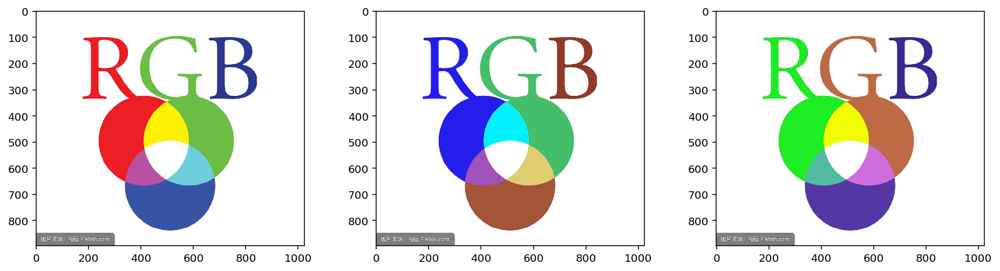
图片扩边（填充）
想为图像周围建一个边可以使用 cv2.copyMakeBorder() 函数。这经常在卷积运算或0填充时被用到。具体参数如下：
src输入图像top,bottom,left,right: 对应边界的像素数目borderType要添加哪种类型的边界：cv2.BORDER_CONSTANT: 添加有颜色的常数值边界，还需要下一个参数（value）cv2.BORDER_REFLIECT: 边界元素的镜像。例如：fedcba | abcdefgh | hgfedcbcv2.BORDER_101或者cv2.BORDER_DEFAULT: 跟上面一样，但稍作改动，例如：gfedcb | abcdefgh | gfedcbacv2.BORDER_REPLICATE: 复后一个元素。例如: aaaaaa| abcdefgh|hhhhhhhcv2.BORDER_WRAP: 不知怎么了, 就像样: cdefgh| abcdefgh | abcdefgvalue: 边界颜色
xxxxxxxxxxkimg = cv2.imread("./images/12.png")print("origin:",kimg.shape)pink = [255,123,255]# 原始图片尺寸不变，对上下扩充 200 像素，左右扩充 100 像素。constant = cv2.copyMakeBorder(kimg,200,200,100,100,cv2.BORDER_CONSTANT,value = pink)print("Constant change:",constant.shape)# 复制后一个元像素, 在上下 300 范围内重复，在左右 300 范围内重复replicate = cv2.copyMakeBorder(kimg,300,300,300,300,cv2.BORDER_REPLICATE)print("replicate change:",replicate.shape)# 边界元素镜像reflect = cv2.copyMakeBorder(kimg,0,600,0,0,cv2.BORDER_REFLECT)print("reflect change:",reflect.shape)# 边界镜像（从倒数第二个开始）reflect101 = cv2.copyMakeBorder(kimg,0,600,0,0,cv2.BORDER_REFLECT101)print("reflect101 change:",reflect101.shape)# 位置兑换，即上面区域到下面，左边区域到右边wrap = cv2.copyMakeBorder(kimg,300,300,300,300,cv2.BORDER_WRAP)print("wrap change:",wrap.shape)plt.figure(figsize=(16,8))plt.subplot(231),plt.imshow(kimg),plt.title('original')plt.subplot(232),plt.imshow(replicate),plt.title('replicate')plt.subplot(233),plt.imshow(reflect),plt.title('reflect')plt.subplot(234),plt.imshow(reflect101),plt.title('reflect101')plt.subplot(235),plt.imshow(wrap),plt.title('wrap')plt.subplot(236),plt.imshow(constant),plt.title('constant')plt.show()xxxxxxxxxxorigin: (786, 1186, 3)Constant change: (1186, 1386, 3)replicate change: (1386, 1786, 3)reflect change: (1386, 1186, 3)reflect101 change: (1386, 1186, 3)wrap change: (1386, 1786, 3)
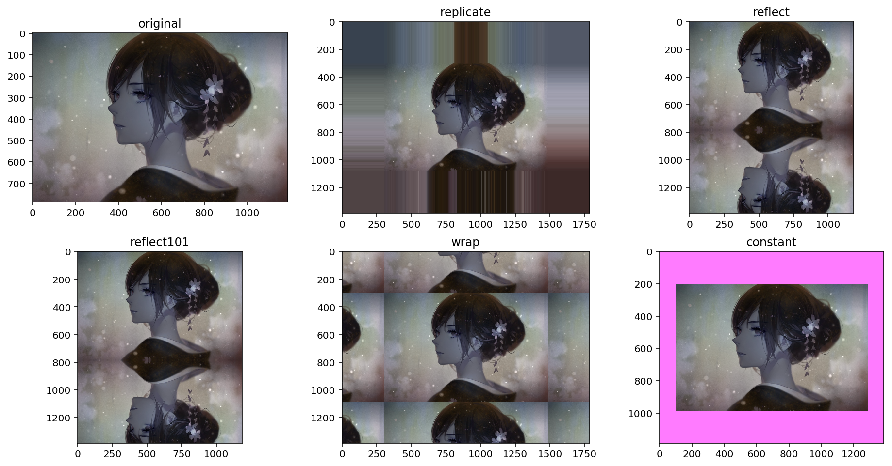
图像上的运算
图像加法运算
加法运算使用 cv2.add(), 也可以直接使用 numpy，res=img1+img2.OpenCV 中的加法与 Numpy 的加法有所不同的。 OpenCV 的加法是一种饱和操作，而 Numpy 的加法是一种模操作。 例如，对于 100+200，使用 cv2.add() 函数得到的是 255，而使用 Numpy 的加法得到的是 300%256 . OpenCV的结果会更好，so尽量使用OpenCV中的函数
两幅图像的大小，类型必须一致，或者第二个图像可以是一个简单的标量值。在大小不一致的情况下可以使用 ROI 进行操作。
【参考】
xxxxxxxxxxadd1 = cv2.imread("./images/341.jpg")add2 = cv2.imread("./images/342.jpg")sum1 = cv2.add(add1,add2)sum2 = add1 + add2show_img([add1,add2,sum1,sum2],1,4,titles=["add1","add2","sum by cv2","sum by numpy"])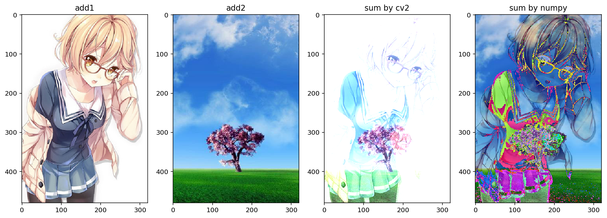
图像混合
次处是使用 cv2.addWeighted() 做权重相加。
这也是加法，不同的是两幅图像的权重不同，这会给人一种混合或者透明的感觉。图像混合的计算公式如下：
g(x) = (1−α)f0(x)+αf1(x)
通过修改α的值（0-->1）,可以实现很酷的混合。例：将两幅图像混合，第一幅权重为0.7 . 第二幅权重为0.3。函数cv2.addWeighed()可以按下面的公式对图片进行混合。dst = α·img1 + β·img2+γ 。这里γ的取值为0.
xxxxxxxxxxaw1 = cv2.imread("./images/341.jpg")aw2 = cv2.imread("./images/342.jpg")saw1 = cv2.addWeighted(aw1,0.7,aw2, 0.3, 0)saw2 = aw1 * 0.7 + aw2 * 0.3 + 0show_img([aw1,aw2,saw1,saw2],1,4,titles=["aw1","aw2","saw1 by cv2","saw2 by numpy"])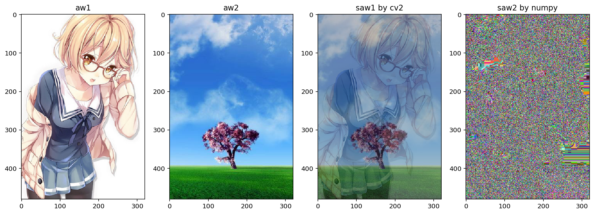
通过 ROI 混合图像
xxxxxxxxxxbg = cv2.imread("./images/bg.jpg")bg1 = cv2.imread("./images/bg.jpg")emb = cv2.imread("./images/341.jpg")print("bg:",bg.shape, "emb:", emb.shape)bg[0:emb.shape[0],0:emb.shape[1]] = cv2.addWeighted(emb ,0.7 , bg[0:emb.shape[0],0:emb.shape[1]], 0.2, 0)show_img([bg1,emb,bg],1,3)xxxxxxxxxxbg: (720, 1280, 3) emb: (480, 320, 3)
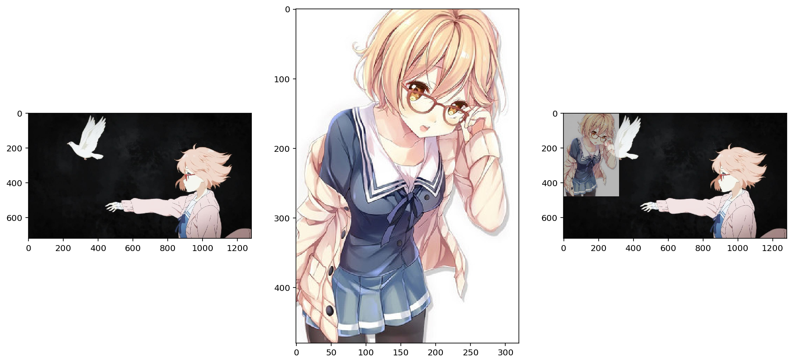
图像的位运算
位运算包括：and、or、not、xor 四种。与数学中的概念类似，and 表示两者相同的部分，or 表示两者叠加，not 是取反的意思，xor 表示相同的部分取反。
【参考】
xxxxxxxxxxshapesize = (256,256,3)# 绘制矩形rectangle = np.zeros(shapesize, np.uint8)cv2.rectangle(rectangle, (28,28),(228,228),(255,255,255),-1)# 绘制圆形circle = np.zeros(shapesize, np.uint8)cv2.circle(circle, (128,128),110,(255,255,255),-1)bitwiseAnd = cv2.bitwise_and(rectangle, circle)bitwiseOr = cv2.bitwise_or(rectangle, circle)bitwiseNot = cv2.bitwise_not(circle)bitwiseXor = cv2.bitwise_xor(rectangle,circle)show_img([rectangle,bitwiseAnd,bitwiseOr,circle,bitwiseNot,bitwiseXor],2,3, ["rectangle origin","bitwise And","bitwise Or","circle origin","bitwise Not","bitwise Xor"])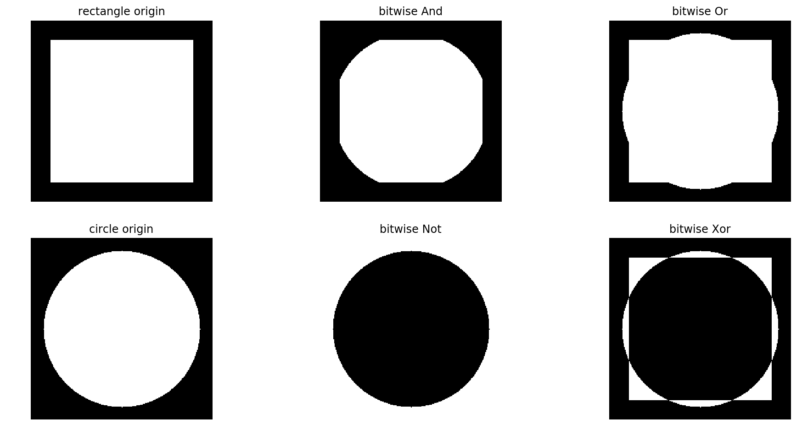
xxxxxxxxxx# 位运算在掩膜中的运用print(bg.shape)circle = np.zeros(bg.shape[0:2], np.uint8)mask = cv2.circle(circle, (1000,400), 250, (255,255,255),-1)masked = cv2.bitwise_and(bg, bg, mask = mask)show_img([mask,masked],1,2)xxxxxxxxxx(720, 1280, 3)
xxxxxxxxxxtemp = np.array([i for i in range(100)])temp = temp.reshape((10,10))t = cv2.bitwise_not(temp)show_img([temp,t],1,2)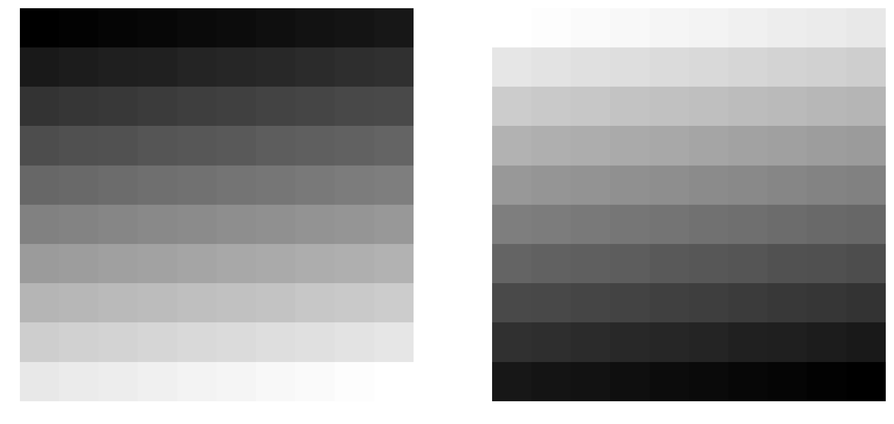
xxxxxxxxxx# 此处需要参考位运算及其ar1 = np.array([1,34,234,6,3,55])ar2 = np.array([10,84,134,6,56,3])cv2.bitwise_and(ar1,ar2)print(bin(234))print(bin(134))print(234 & 134)print(int(0b10000010))print(234 | 134)print(int(0b11101110))print(~23456)print(int(0b01111001))print(~-23457)print(int(0b01111001))xxxxxxxxxx0b111010100b10000110130130238238-2345712123456121
颜色空间转换
颜色空间装换
在 OpenCV 中有 超过150 种进行颜色空间转换的方法。但是你以后就会发现我们经常用到的也就两种：BGR ↔ Gray 和 BGR ↔ HSV。
我们用到的函数是 cv2.cvtColor(input_image，flag)，其中 flag 就是转换类型。 对于BGR↔Gray的转换，我们使用的flag就是cv2.COLOR_BGR2GRAY。 同样对于 BGR↔HSV 的转换我们用的 flag 就是 cv2.COLOR_BGR2HSV。
在 OpenCV 的 HSV 格式中，H（色彩/色度）的取值范围是 [0，179]， S（饱和度）的取值范围 [0，255]，V（亮度）的取值范围 [0，255]。但是不同的软件使用的值可能不同。所以当你拿 OpenCV 的 HSV 值与其他软件的 HSV 值对比时，一定要记得归一化。
你可以下的命令得到所有可用的 flag:
xxxxxxxxxxflags=[i for i in dir(cv2) if i.startswith('COLOR_')] print (flags)xxxxxxxxxxbgo = cv2.imread("./images/342.jpg")rbg2gray = cv2.cvtColor(bgo, cv2.COLOR_BGR2GRAY)print(rbg2gray.shape)rgb2hsv = cv2.cvtColor(bgo, cv2.COLOR_BGR2HSV)print(rgb2hsv.shape)show_img([bgo,rbg2gray,rgb2hsv],1,3,["origin","rbg2gray","rgb2hsv"])xxxxxxxxxx(480, 320)(480, 320, 3)
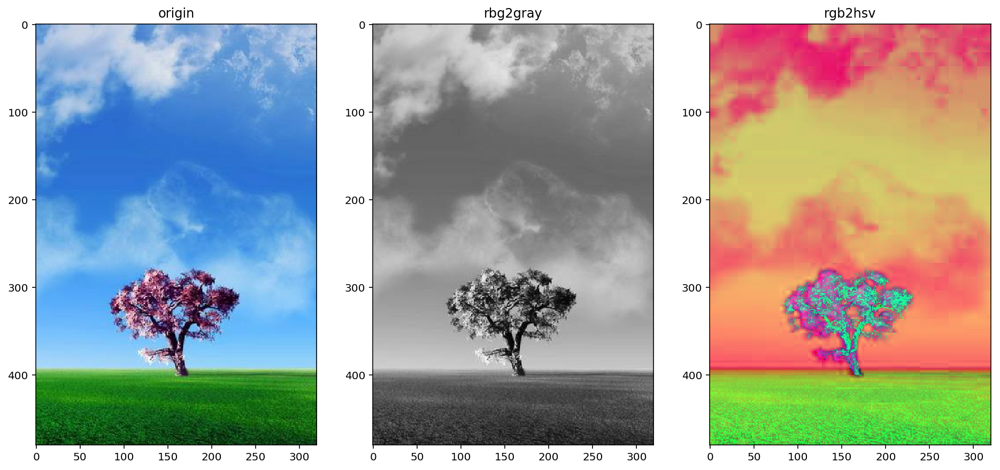
物体追踪 HSV
现在我们知怎样将一幅图像从 BGR 换到 HSV 了，我们可以利用 一点来提取带有某个特定色的物体。在 HSV 颜色空间中要比在 BGR 空间中更容易表示一个特定颜色。在我们的程序中，我们提取的是一个红色的苹果 ，可以使用 cv2.inRange() 来选定。此过程分为以下几个步奏：
- 将图像换到 HSV 空间
- 设置 HSV 阀值到蓝色范围。
- 获取红色物体，当然我们可以做其他任何我们想做的事，比如：在红色物体周围画一个圈。
追踪物体轮廓，以后可以找物体中心，然后跟踪物体，可以在摄像头前挥挥手就可以画图等一些有趣的事。
【参考】
xxxxxxxxxxapple = cv2.imread("./images/apple.jpg")# 转到 HSV 色域apple2hsv = cv2.cvtColor(apple, cv2.COLOR_BGR2HSV)##设定蓝色的阀值，可以在网上查到 HSV 红色的色阈值（红色有两个色阈值）lower_red = np.array([0,43,46])upper_red = np.array([10,255,255])# 根据阈值构建遮罩apple_mask = cv2.inRange(apple2hsv, lower_red, upper_red)#对原图和掩模进行位运算apple_end = cv2.bitwise_and(apple,apple,mask=apple_mask)show_img([apple,apple2hsv,apple_mask,apple_end],2,2,["apple","apple2hsv","apple_mask","apple_end"])
几何变化
扩展缩放
只是改变图像的尺寸大小，cv2.resize() 可以实现这个功能。在缩放时推荐 cv2.INTER_AREA，在拓展时推荐 cv2.INTER_CUBIC（慢）和cv2.INTER_LINEAR。默认情况下所有改变图像尺寸大小的操作使用的是插值法都是 cv2.INTER_LINEAR。
cv2.resize()有以下几个参数：
- src: 原始的图片
- dsize: 目标的大小，要改变成多大的图片
- fx: 沿着横轴缩放比例
- fy: 沿着纵轴缩放比例
- interpolation: 选用的插值方式
xxxxxxxxxxscale = cv2.imread("./images/342.jpg")print("origin:", scale.shape)# 通过设置尺寸调整大小，下面设置的意思是宽高设置为(160,240)，与原来的 shape 顺序不同scale_dsize = cv2.resize(scale, (160,250))print("scale dsize:",scale_dsize.shape)# 通过设置缩放比例调整大小，原始的shape 为(高,宽) , 👇下面 的设置就相当于# 把宽扩大 1.5 倍，高扩大 1.2 倍scale_port = cv2.resize(scale,None,fx=1.5, fy=1.2)print("scale fx and fy:",scale_port.shape)show_img([scale,scale_dsize,scale_port],1,3,["origin","dsize","fx and fy"])xxxxxxxxxxorigin: (480, 320, 3)scale dsize: (250, 160, 3)scale fx and fy: (576, 480, 3)
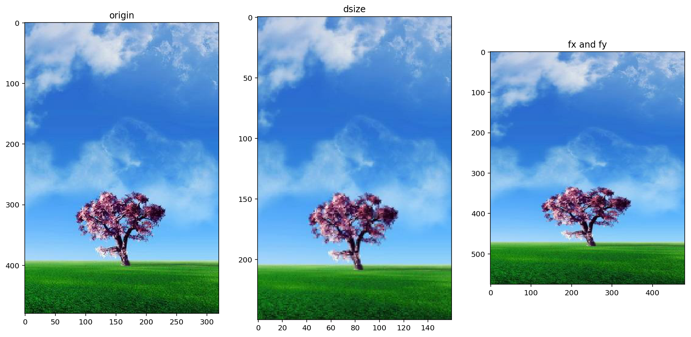
平移变换
如果想要沿（x，y）方向移动，移动的距离为（x,y）可以以下面方式构建移动矩阵，M：[[1,0,x],[0,1,y]]。可以使用Numpy数组构建矩阵，数据类型是np.float32，然后传给函数 cv2.warpAffine() , 其参数如下:
- src: 输入图片
- M: 变换矩阵，移动的距离
- dsize: 输出图片的大小，可以从原始输入中获取，但顺序为(宽,高)
- borderValue:背景的颜色 【参考】
- Python-OpenCv之图像基本处理-平移，缩放，旋转，翻转，裁剪及仿射变换
xxxxxxxxxxtran = cv2.imread("./images/apple.jpg")# 向左移动 40 像素，向下移动 120 像素tranm = np.float32([[1,0,40],[0,1,120]])rows,cols,channels = tran.shapetran_end = cv2.warpAffine(tran,tranm,(cols,rows),borderValue=80)show_img([tran,tran_end],1,2,["origin","translate"])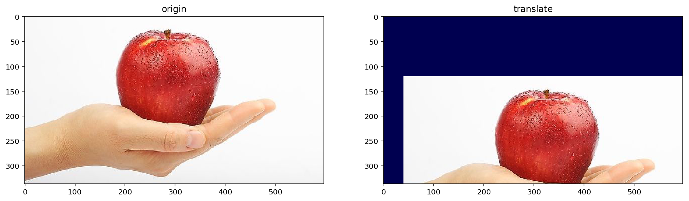
旋转
对一个图像旋转角度θ，需要使用下面的旋转矩阵。

但OpenCVC允许在任意地方进行旋转，所以矩阵应该为

其中 α = scale · cos θ. 为构建旋转矩阵，OpenCV提供了一个函数 cv2.getRotationMatrix2D 其参数如下：
- center: 旋转中心位置，在原始的图片中
- angle: 旋转的角度，以度为单位
- scale: 旋转缩放比例
xxxxxxxxxxrote_apple = cv2.imread("./images/apple.jpg")rows,cols,channels = rote_apple.shape# 逆时针旋转rote_m1 = cv2.getRotationMatrix2D((cols/2,rows/2),45,1)# 顺时针旋转，并缩小一半rote_m05 = cv2.getRotationMatrix2D((cols/2,rows/2),-90,0.5)rote_end1 = cv2.warpAffine(rote_apple, rote_m1, (cols,rows))rote_end2 = cv2.warpAffine(rote_apple, rote_m05, (cols,rows))show_img([rote_apple,rote_end1,rote_end2],1,3,["origin","rotation 45", "rotation -90 and scale 0.5"])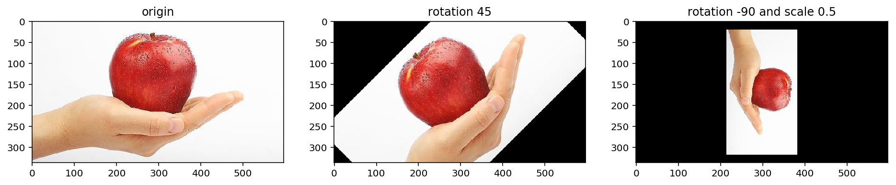
仿射变换
仿射变换就是图像的线性变换加上平移，用一幅图表示，就是

由 image1 到 image2 的转换经过了三个操作
- 旋转 (线性变换)
- 缩放操作(线性变换)
- 平移 (向量加)
在仿射变换中，原图中所有平行线在结果图像中同样平行。为创建这个矩阵，需要从原图像中找到三个点以及他们在输出图像中的位置，然后cv2.getAffineTransForm() 会创建一个2X3的矩阵。最后这个矩阵会被传给函数 cv2.warpAffine()
【参考】
xxxxxxxxxx# 在图上绘制点def draw_dot(img,positions,radius=3,border=3): for pos in positions: # 每个点产生随机颜色 R = np.random.randint(0,255) G = np.random.randint(0,255) B = np.random.randint(0,255) cv2.circle(img,(pos[0],pos[1]),radius,(R,G,B),border) return imgxxxxxxxxxxaff_apple = cv2.imread("./images/apple.jpg")rows,cols,channels = aff_apple.shapebefore = [[50, 65], [150, 65], [210, 210]]aff_apple = draw_dot(aff_apple, before)# 变换前的三个点pts1 = np.float32(before)# 变换后的三个点pts2 = np.float32([[50, 100], [150, 65], [100, 250]])# 生成变换矩阵(src,dst)aff_m = cv2.getAffineTransform(pts1,pts2)# 进行仿射变换aff_end = cv2.warpAffine(aff_apple,aff_m,(cols,rows))show_img([aff_apple,aff_end],1,2,["origin","affine"])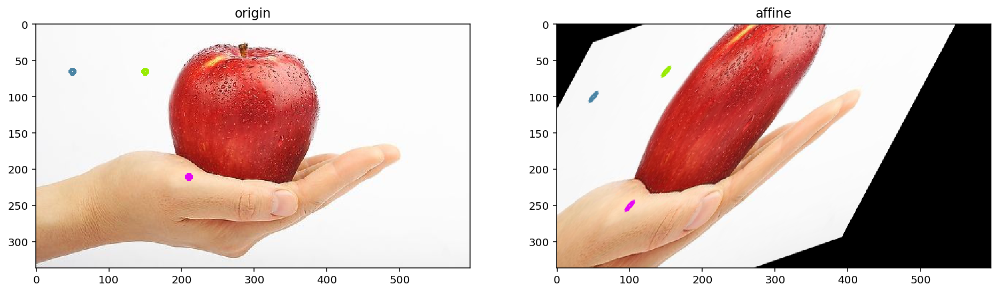
透视变换
透视变换绝对是一项很酷的功能。我们经常会用手机去拍身份证和文件，无论你怎么拍，貌似都拍不正或者有边框。如果你使用过手机上面一些扫描类软件，比如”扫描全能王“，”Office Lens“，它们能很好地矫正图片。这些软件就是应用透视变换实现的，跟仿射变换一样，我们不用知道它的具体原理。
透视变换后，原图中的直线依旧是直线。如下图，我们实现这个功能：
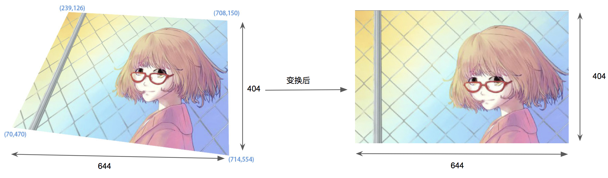
上图，首先确定四个角的坐标，并确定变换后的宽高，然后对每个点进行变换，先确定一个变换的基点，然后通过宽高算出其他几个点应该在的位置。
对于视角变换，我们需要一个3x3变换矩阵。在变换前后直线还是直线。需要在原图上找到4个点，以及他们在输出图上对应的位置，这四个点中任意三个都不能共线，可以有函数 cv2.getPerspectiveTransform() 构建，然后这个矩阵传给函数 cv2.warpPerspective().
xxxxxxxxxxpersp = cv2.imread("./images/weilai_per.jpg")rows,cols,channels = persp.shape# 原图中卡片的四个角点pts1 = np.float32([[239, 126], [708, 150], [70, 470], [714, 554]])# 变换后分别在左上、右上、左下、右下四个点pts2 = np.float32([[0, 0], [644, 0], [0, 404], [644, 404]])# 生成透视变换矩阵persp_m = cv2.getPerspectiveTransform(pts1, pts2)# 进行透视变换perp_end = cv2.warpPerspective(persp, persp_m, (640, 404))show_img([persp, perp_end],1,2,["origin","change"])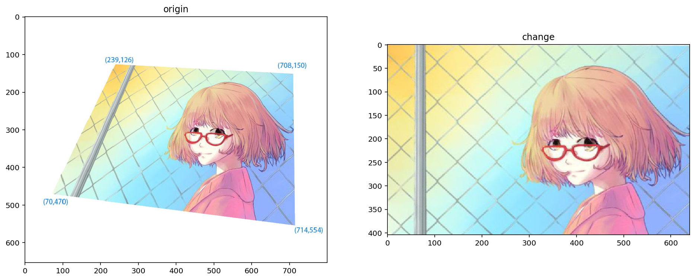
图像阈值
此处会用到 cv2.threshold, cv2.adaptiveThreshold 两个函数
固定阈值
当像素值高于阀值时，我们给这个像素赋予一个新值（可能是白色），否则我们给它赋予另外一种颜色（也许是黑色）。这个函数就是 cv2.threshold()参数如下：
src: 原图像，原图像应该是灰度图。thresh: 阀值，maxval: 最大阈值，即超过阈值时被赋予的值type: 阈值类型， 包括以下五种- cv2.THRESH_BINARY
- cv2.THRESH_BINARY_INV
- cv2.THRESH_TRUNC
- cv2.THRESH_TOZERO
- cv2.THRESH_TOZERO_INV
【参考】
xxxxxxxxxx# 读入灰度值thresh = cv2.imread("./images/gray.jpg",0)# ret 即 return Value，返回的阈值，127和255表示 当值大于127是，当前值替换为255ret,thresh1 = cv2.threshold(thresh,127,255,cv2.THRESH_BINARY)ret,thresh2 = cv2.threshold(thresh,127,255,cv2.THRESH_BINARY_INV)ret,thresh3 = cv2.threshold(thresh,127,255,cv2.THRESH_TRUNC)ret,thresh4 = cv2.threshold(thresh,127,255,cv2.THRESH_TOZERO)ret,thresh5 = cv2.threshold(thresh,127,255,cv2.THRESH_TOZERO_INV)titles = ["Origin","BINARY","BINARY_INV","TRUNC","TOZERO","TOZERO_INV"]imgs = [thresh,thresh1,thresh2,thresh3,thresh4,thresh5]show_img(imgs,2,3,titles,figsize=(16,7))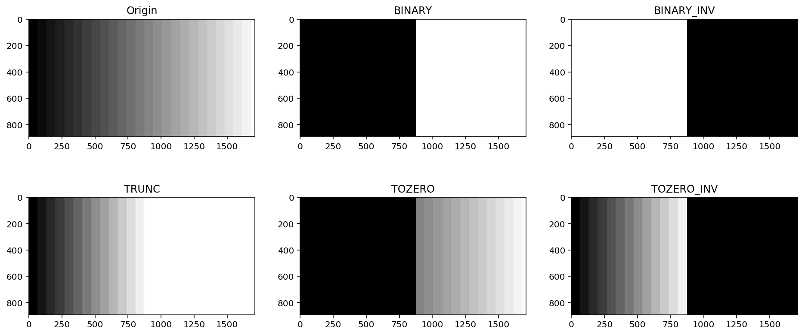
结合上图，可以看到五种方式的行为描述如下：
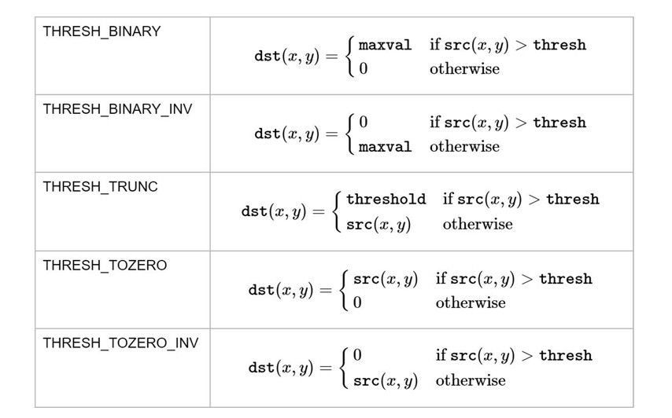
自适应阈值
根据图像上的每一个小区域计算与其对应的阀值。因此在同一幅图像上的不同区域采用的是不同的阀值，从而使我们能在亮度不同的情况下得到更好的结果。
这里需要使用 cv2.adaptiveThreshold 函数，参数如下：
src: 原始图像，单通道,maxValue: 当满足阈值条件是为像素赋予的值，通常为255,adaptiveMethod: 区域阈值的计算方式, 可以选的有两个ADAPTIVE_THRESH_MEAN_C：小区域内取均值ADAPTIVE_THRESH_GAUSSIAN_C：小区域内加权求和，权重是个高斯核
thresholdType: 阈值类型，即前面的五种,blockSize: 小块区域的面积，如 5×5,C: 常量，最终阈值等于小区域计算出的阈值再减去此值
xxxxxxxxxxadp = cv2.imread("./images/12.jpg",0)# 固定阈值ret, th1 = cv2.threshold(adp, 127, 255, cv2.THRESH_BINARY)# 自适应阈值adp1 = cv2.adaptiveThreshold(adp, 255, cv2.ADAPTIVE_THRESH_MEAN_C, cv2.THRESH_BINARY, 11, 4)adp2 = cv2.adaptiveThreshold(adp, 255, cv2.ADAPTIVE_THRESH_GAUSSIAN_C, cv2.THRESH_BINARY, 11, 6)titles = ['Original', 'Threshold', 'Adaptive Mean', 'Adaptive Gaussian']images = [adp, th1, adp1, adp2]show_img(images,2,2,titles)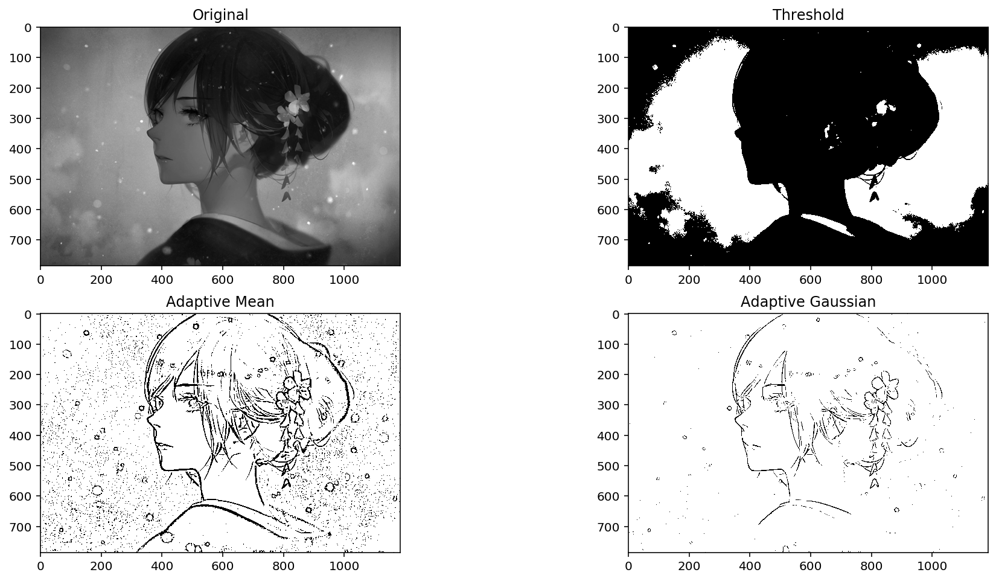
Otsu阈值法
在前面固定阈值中，我们是随便选了一个阈值如127，那如何知道我们选的这个阈值效果好不好呢？答案是：不断尝试，所以这种方法在很多文献中都被称为经验阈值。Otsu阈值法就提供了一种自动高效的二值化方法 ，并且Otsu’s非常适合于图像灰度直方图具有双峰的情况，他会在双峰之间找到一个值作为阈值，对于非双峰图像，可能并不是很好用。那么经过Otsu’s得到的那个阈值就是函数 cv2.threshold 的第一个参数了。因为Otsu’s方法会产生一个阈值，那么函数 cv2.threshold 的的第二个参数（设置阈值）就是0了，并且在 cv2.threshold 的方法参数中还得加上语句 cv2.THRESH_OTSU。
【参考】
xxxxxxxxxx# ots1 = cv2.imread("./images/12.jpg",0)# ots1 = cv2.imread("./images/weilai.jpg",0)ots1 = cv2.imread("./images/high2.jpg",0)# 固定阈值法ret1, th1 = cv2.threshold(ots1, 100, 255, cv2.THRESH_BINARY)# Otsu阈值法ret2, th2 = cv2.threshold(ots1, 0, 255, cv2.THRESH_BINARY + cv2.THRESH_OTSU)# 先进行高斯滤波，再使用Otsu阈值法blur = cv2.GaussianBlur(ots1, (5, 5), 0)ret3, th3 = cv2.threshold(blur, 0, 255, cv2.THRESH_BINARY + cv2.THRESH_OTSU)images = [ots1, 0, th1, ots1, 0, th2, blur, 0, th3]titles = ['Original', 'Histogram', 'Global(v=100)', 'Original', 'Histogram', "Otsu's", 'Gaussian filtered Image', 'Histogram', "Otsu's"]plt.figure(figsize=(16,8))for i in range(3): # 绘制原图 plt.subplot(3, 3, i * 3 + 1) plt.imshow(images[i * 3], 'gray') plt.title(titles[i * 3], fontsize=8) plt.xticks([]), plt.yticks([]) # 绘制直方图plt.hist，ravel函数将数组降成一维 plt.subplot(3, 3, i * 3 + 2) plt.hist(images[i * 3].ravel(), 256) plt.title(titles[i * 3 + 1], fontsize=8) plt.xticks([]), plt.yticks([]) # 绘制阈值图 plt.subplot(3, 3, i * 3 + 3) plt.imshow(images[i * 3 + 2], 'gray') plt.title(titles[i * 3 + 2], fontsize=8) plt.xticks([]), plt.yticks([])plt.show()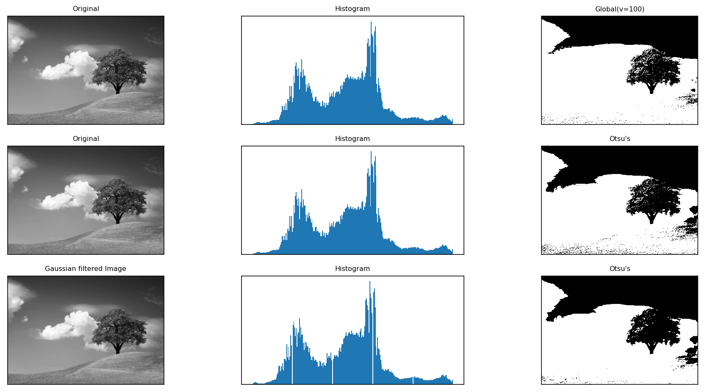